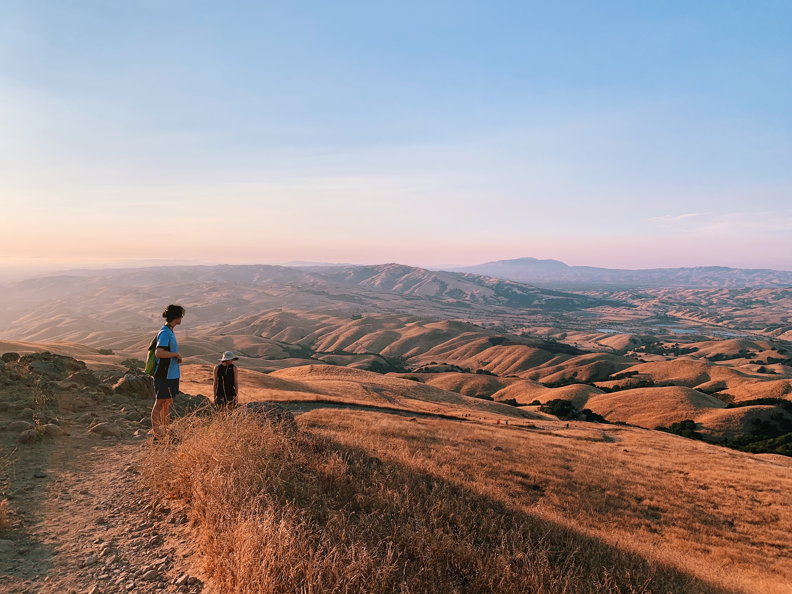
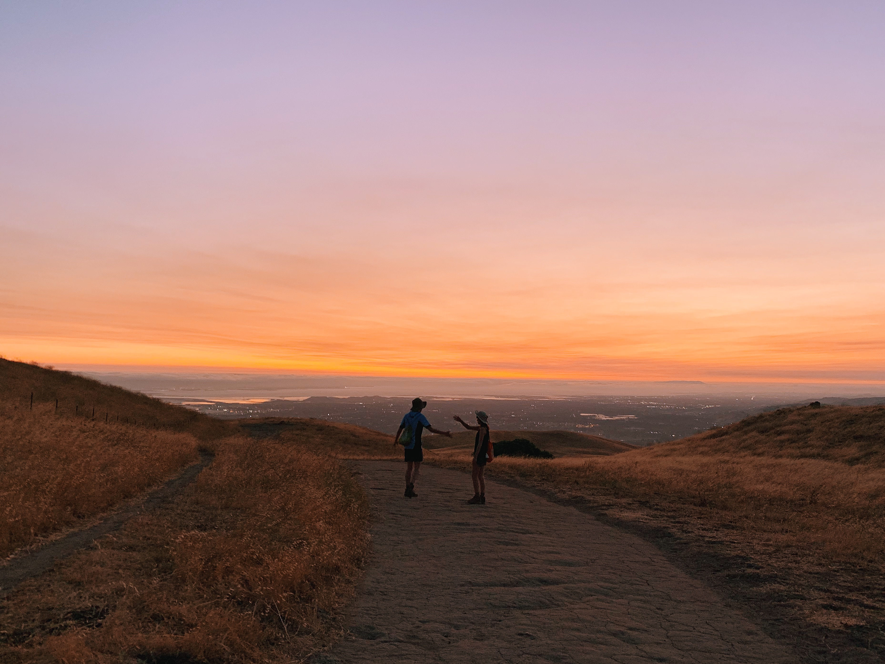
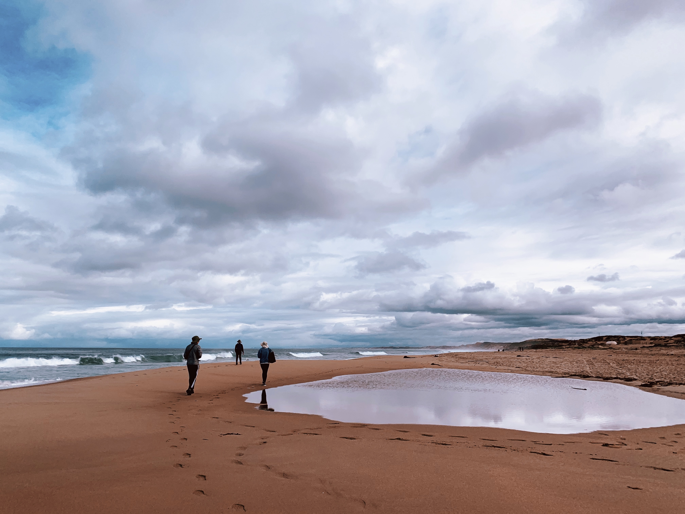

landscapes
Overlooking Mission Peak, California. The classic totem pole was wrapped in orange netting to prevent hikers from touching it, though many people climbed it anyway. Instead, we took advantage of the views on the way up.

Michael Liu and Mylan Le high-five during sunset at Mission Peak, California.

Just before the first shelter-in-place order was announced, my friends and I took a weekend trip to Monterey, California. We learned to fish here!